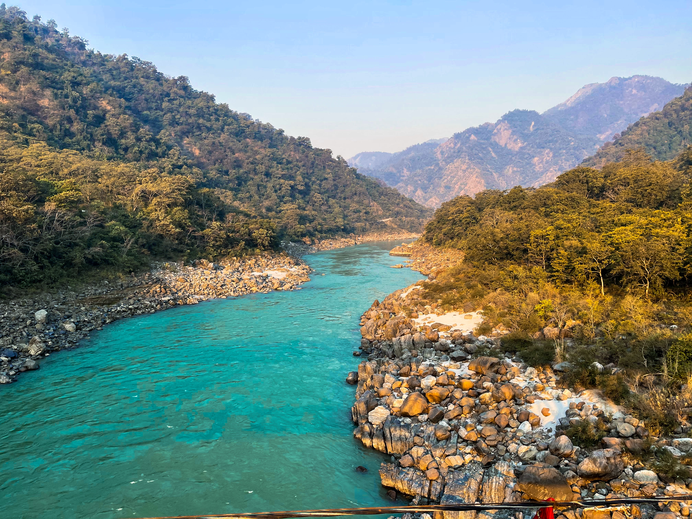

RISHIKESH
- 4 Days
- Beautiful Beaches
- Water Sports
- Luxury Stays
- Delicious Cuisines
- Avg cost: ₹ 21,999
ITINERARY
-
DAY 1
- Arrive in Rishikesh by road or train. The nearest major railway station is Haridwar, which is well-connected to Rishikesh.
- Check-in at your chosen accommodation, whether it's a hotel, guesthouse, or ashram.
- After settling in, visit the famous Laxman Jhula, a suspension bridge over the Ganges River. Enjoy the scenic views and explore the bustling market around it.
- Have dinner at a local restaurant or at your accommodation.
- Attend the evening Ganga Aarti at Parmarth Niketan or Triveni Ghat to witness the spiritual atmosphere by the river.
DAY 2
- Start your day early with a yoga or meditation session. Rishikesh is known for its yoga retreats, and many ashrams and centers offer drop-in classes.
- After breakfast, head to Shivpuri, located about 16 km from Rishikesh. Here, you can go for a thrilling white-water rafting experience in the Ganges River. Make sure to choose a reputable operator for safety.
- Return to Rishikesh for lunch.
- In the afternoon, visit the tranquil Beatles Ashram (Maharishi Mahesh Yogi Ashram), where the Beatles stayed in the late 1960s. Explore the graffiti-covered walls and the meditation huts.
- In the evening, you can attend another Ganga Aarti or spend some time at the riverbank for peaceful reflection.
- Dinner at your accommodation or a local eatery.
DAY 3
- After breakfast, visit the Neelkanth Mahadev Temple, dedicated to Lord Shiva. It's located amidst lush greenery and offers a serene atmosphere.
- Explore the Trayambakeshwar Temple, situated on a hill overlooking Rishikesh. The temple provides panoramic views of the town and the Ganges River.
- Have lunch in the town.
- Spend the afternoon at Rajaji National Park if you're interested in wildlife. It's about an hour's drive from Rishikesh and offers the chance to spot elephants, tigers, and various bird species.
- Return to Rishikesh in the evening.
- Enjoy your last dinner in Rishikesh, perhaps at a restaurant with a view of the Ganges.
DAY 4
- After breakfast, check out from your accommodation.
- Depending on your departure time, you can spend your remaining hours exploring local markets, shopping for souvenirs, or enjoying a relaxing walk by the river.
- Depart from Rishikesh, either by train from Haridwar or by road.